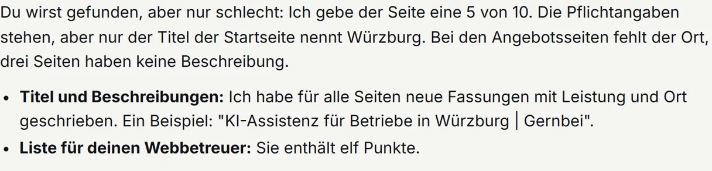
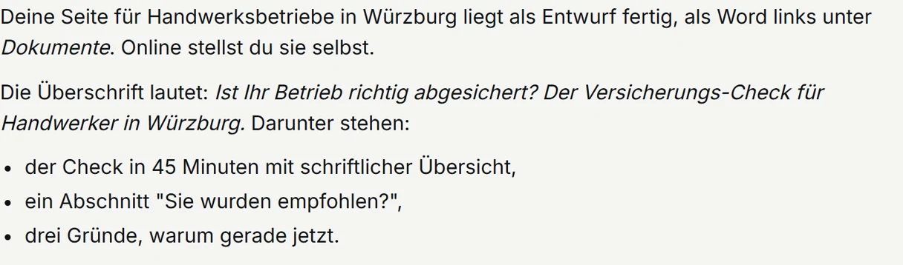
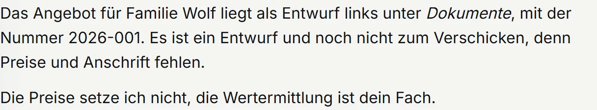
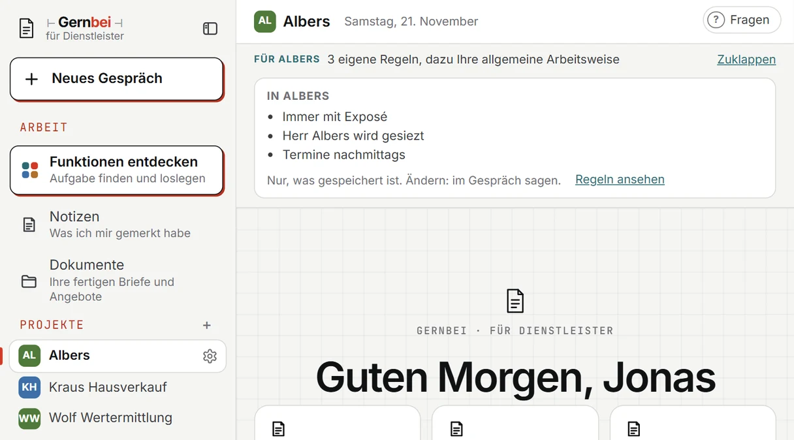
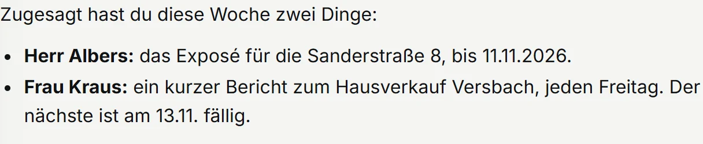
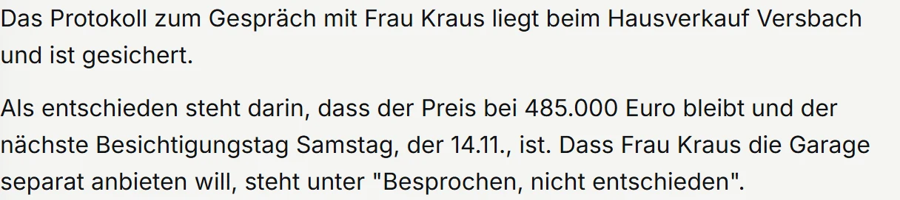

Für Inhaber einer eigenen Firma bis zwei Mitarbeiter, außerhalb des Handwerks
Sie arbeiten für Ihre Kunden. Den Papierkram bereitet Gernbei vor.
Am Rechner im Büro oder am Handy zwischen zwei Terminen: Sie schreiben ein paar Stichworte. Gernbei findet den Stand, schreibt den Entwurf und merkt sich, was Sie wem zugesagt haben. Abschicken tun Sie.
Läuft bei Amazon. Browser öffnen, loslegen.
Am Rechner im Büro, am Handy unterwegs. Dasselbe Gespräch. Erfundener Betrieb, echte Antworten aus Gernbei. Selbst ausprobieren, am Laptop und am Handy →
Was Gernbei für Dienstleister kann
Jede Antwort stammt aus einem echten Lauf in Gernbei, gekürzt. Tippen Sie an, was Sie sehen möchten.
Was machen Sie?
Gernbei für Dienstleister
am Rechner, vor dem Lenkungskreis
Am Rechner im Büro,am Handy unterwegs. Dasselbe Gespräch.
Beispiele aus Ihrem Alltag. Tippen Sie an.
Erfundener Betrieb, echte Antwort, gekürzt.
Für Makler: gefunden werden

Website-CheckEine Note von 1 bis 10, die drei wichtigsten Befunde, Titel und Beschreibungen zum Einsetzen und eine Liste für Ihren Webbetreuer. Im Bild geprüft: unsere eigene Seite.

NischenseiteEtwa Gewerbeversicherung für Handwerksbetriebe oder Immobilie geerbt in Würzburg. Zugleich die Seite, die Ihre Kunden weiterempfehlen.
LinkedIn, Instagram, Facebook, TikTok, YouTube und Ihr Google-Profil. Gernbei denkt an die Pflichtangaben Ihres Berufs, etwa die Energieangaben bei einer Wohnung.
Ein Beitrag zu einer echten Änderung für Ihre Kunden, mit der amtlichen Quelle. So lebt Ihr Profil.
Online stellen Sie selbst. Und Ihre Website beantwortet Fragen auch nachts: der Chatbot für Ihre Seite.
Was Gernbei für Sie tut

AngebotGeben Sie ein altes Angebot als Vorlage, dann übernimmt Gernbei Ihren Aufbau. Was fehlt, sagt Gernbei, statt es zu erfinden.

ProjekteEin Klick auf den Kunden links, und Gernbei arbeitet mit seinem Stand und seinen Regeln, etwa bei Albers immer mit Exposé. Eine Frage nennt, was offen ist.

ZusagenJede Zusage steht mit Datum beim Kunden und morgens im Bericht.

ProtokollEntschiedenes und Offenes getrennt, abgelegt beim Kunden, auf Wunsch als Word-Datei.
Geordnet wie in Gernbei unter Funktionen entdecken. Die Beispiele kommen aus Ihrem Alltag.
Festhalten
Schreiben
Nachschlagen
Überblick
Zweiter Blick
Kunden gewinnen
Auf Sie eingestellt
Im Hintergrund und verbunden
So starten Sie
Zwanzig Minuten, online oder bei einem Kaffee in Würzburg. Sie sehen, welchen Entwurf Gernbei aus Ihrer Mail macht. Unverbindlich.
Ich richte ihn persönlich ein, den Link bekommen Sie per Mail. Ihr Claude-Team bei Anthropic legen wir gemeinsam an.
Am Ende des Grundkurses stehen Ihre ersten Kunden in Gernbei, und Ihr erstes Angebot liegt als Entwurf vor.
Hakt beim Einrichten etwas, helfe ich.
Das letzte Wort haben Sie: Gernbei legt Entwürfe ab. Abschicken, auch aus Outlook, Veröffentlichen und Ihre Gespräche am Telefon bleiben bei Ihnen; auf Wunsch nimmt der KI-Telefonassistent ab (im Probebetrieb).
Der Preis
Den Preis nenne ich Ihnen im Gespräch, passend zu Ihrer Firma.
Dazu brauchen Sie ein eigenes Claude-Team bei Anthropic, dem Hersteller der KI.
Ihr Angebot nennt alles einzeln: den Betrag im Monat, die Einrichtung, wo eine anfällt, und das Claude-Team. So sehen Sie die ganzen Kosten, bevor Sie zusagen.
Angebot nur für Unternehmer.
Hilft Ihnen jemand, etwa in der Buchhaltung? Diese Person bekommt einen eigenen Zugang zum selben Preis.
Wo Ihre Daten liegen
Ihre Unterlagen liegen bei Amazon in der EU, in Stockholm, in einem Bereich nur für Ihre Firma. Was Gernbei für eine Antwort liest, verarbeitet Anthropic auch in den USA; Amazon und Anthropic sind amerikanische Unternehmen.
Zwanzig Minuten, online oder bei einem Kaffee in Würzburg. Bringen Sie eine Kundenmail mit, dann sehen Sie, was Gernbei daraus macht. Ich sage Ihnen ehrlich, ob es passt.
Oder direkt: hallo@gernbei.de · 0931 45321005 · Würzburg · remote & vor Ort